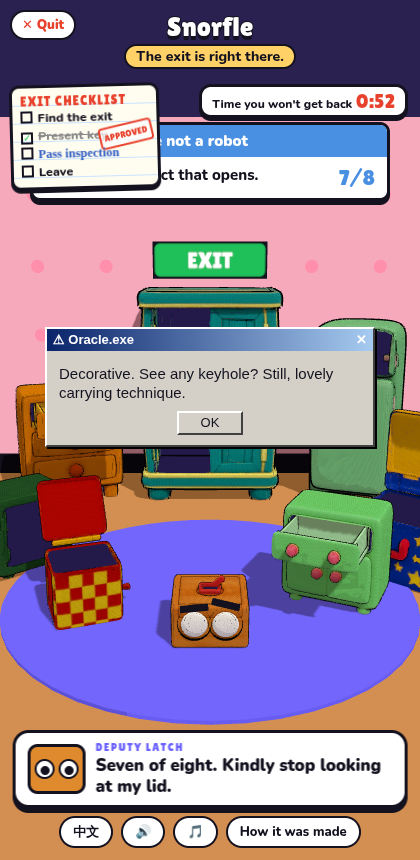
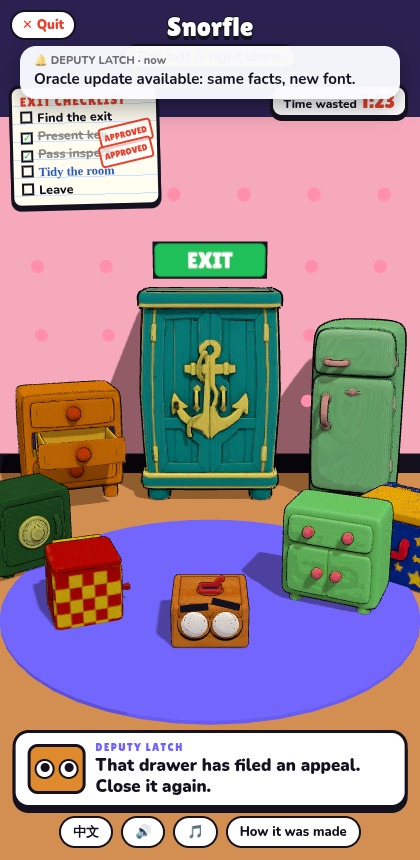
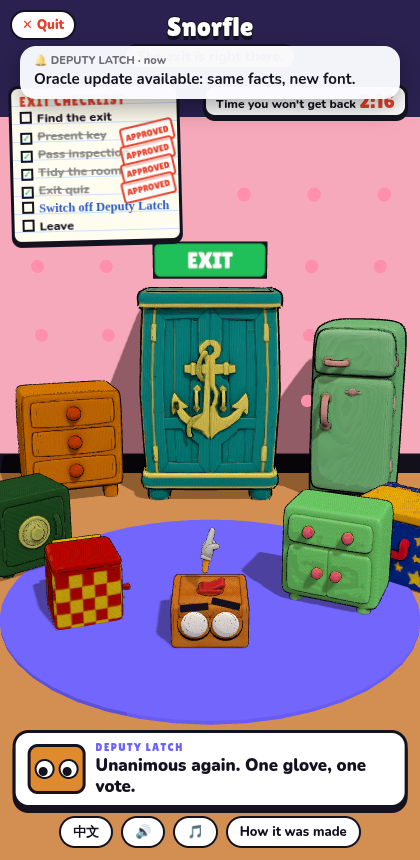
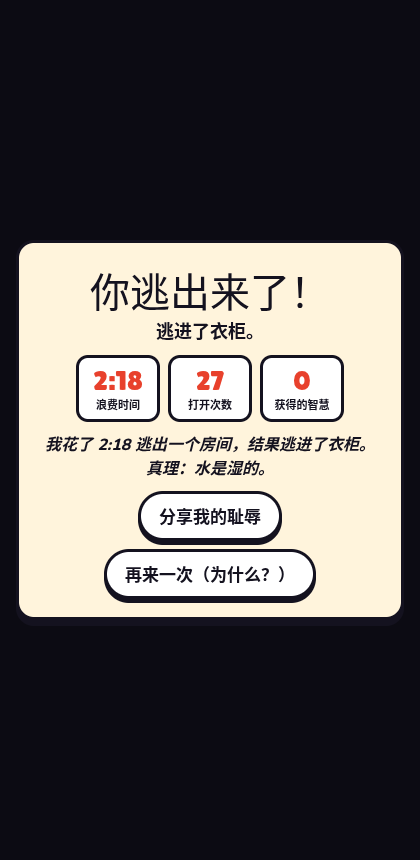

Snorfle
A ragebait escape room with a meaningless name. The exit is right there. The exit is right there. Leaving takes about two minutes and teaches you nothing. Every door, drawer and lid in the room is Aholo Lux3D articulation.
Play: https://snorfle-game.vercel.app · Source: https://github.com/emmaGH1/rummage/tree/main/useless




The idea
An entry for the Most Useless Award. Your only goal is to leave a small room, and a big green EXIT sign is right in front of you. Narrating everything is Deputy Latch, a small wooden box that talks by flapping its Lux3D lid and only knows extremely obvious facts ("Fact: water is wet." "Fact: you are now breathing manually."). Every step of the escape is a real joint that Lux3D generated:
- Tap the EXIT. The doors swing open. "Fact: that is a wardrobe. Wardrobes are not exits." The sign changes to EXIT?
- Find the key. "Keys live in drawers. Drawers are the things that slide." Not here. Not here either. Warmer. The fourth drawer you open has the key, whichever one it is.
- Use the key. "Wardrobes don't have locks. The key was decorative."
- Prove you are not a robot. A CAPTCHA: open every object that opens. It stalls at 7/8. The eighth is Deputy Latch itself: "It is very visible. It is talking to you."
- Put the room back. Close everything. One drawer slides back out: "That drawer has concerns."
- Exit quiz. "Is water wet?" "A kilo of bricks or a kilo of feathers?" "Are you still in the room?"
- Turn off Deputy Latch. Flip its switch, a real Lux3D joint, and it does the opposite of a useless box: its glove comes out and turns it back on. Twice. The third time the glove gives up and waves, and every door in the room swings open in a victory chord.
- Leave. You walk through the EXIT into the wardrobe. The share card reads: "I spent 2:25 escaping a room. I escaped into a wardrobe. Fact: water is wet." Wisdom gained: 0.
Built to waste your time
- Deputy Latch is a petty exit clerk with googly eyes that follow your finger and roll at you. His story lines are salty ("A wardrobe. Well, your coat can leave." "A key! My supervision has paid off." "Fine. Get in the wardrobe. I will put you down as a coat."). An EXIT CHECKLIST gets new rules pencilled in every time you get close, each stamped APPROVED when done. He also interrupts you with a sticky note, a phone notification, a BREAKING news ticker, a ransom note, a Windows-98 style "Oracle.exe" alert, or a giant wobbling shout.
- Quitting does not work. "Are you sure?" The Yes button runs away twice. A progress bar calculates how much time you wasted and sticks at 99.99%, then lists what you could have done instead (boiled 0.4 eggs, done 87 push-ups, called your mum 0.7 times, finished your hackathon project 0 times) and says you are never getting that time back. "Type QUIT to confirm." "Did you mean QUILT?" Your quit request is number 4,812 in a queue that only gets longer. Finally: "Fact: this is a website. Websites cannot close themselves. Close the tab." The Close button is decorative. Closing the tab asks "Leave site?" one more time.
- Elevator music, synthesized, that drifts further out of tune every loop, with a random kazoo. Muting it says "it is still playing in your head" and plays one more kazoo.
- Small things: tapping a wall ("Walls: 0 doors. Very consistent."), the rug or the floor gets a fact; useless notifications ("Your battery is lower than when you started."); the timer renames itself (Time wasted, Time wasted (well), Time you won't get back, Life, ticking); the EXIT sign flickers to EXlT.
How Lux3D built it
Every interactive object in the room is a URDF returned by Lux3D articulation, loaded with three.js and urdf-loader. Every door, drawer, lid and the switch moves on its Lux3D joint, and none was rigged by hand. Deputy Latch, its switch and the glove were generated for this entry today; the other pieces come from our main entry, Rummage, and were generated by the same pipeline.
| Piece | Text-to-3D task | Articulation task | Joints used |
|---|
| Deputy Latch (useless box), new | 8412876 (135 s) | 8413206 (135 s) | lid, toggle switch |
| Mint cabinet, new | 8412870 (108 s) | 8413151 (181 s) | 2 doors, 1 drawer |
| Glove, new | 8412874 (95 s) | n/a (prop) | moved by code |
| Wardrobe (the EXIT) | 8292708 | 8293004 | 2 doors |
| Chest of drawers (the key) | 8288959 | 8290660 | 3 drawers |
| Fridge | 8294927 | 8295162 | 2 doors |
| Safe | 8300190 | 8301101 | door |
| Toy chest | 8296205 | 8296437 | lid |
| Jack-in-the-box | 8296206 | 8296901 | lid |
The surprise: for Deputy Latch we only asked for the lid to move ("The top lid swings upward and backward on a hinge along its back edge"). Lux3D's articulation also found the toggle switch and gave it its own revolute joint (±30°), mounted on the lid. The whole last act of the game is built on that joint.
What is ours, not Lux3D's
The story, the facts, the CAPTCHA and quiz, the glove's path, the room shell (walls, floor, rug, EXIT sign), synthesized sounds, toon shading with ink outlines, and web compression of the meshes (gltf-transform). The loading, shading and joint code is shared with Rummage. English and Simplified Chinese (废话文学), following the browser language.
Tools used
Aholo Lux3D (text-to-3D, articulation), three.js, urdf-loader, gltf-transform, Vite, Vercel; Claude and Codex as coding assistants (a Codex model reviewed the game design). Built on Nov 19 2026 in about two hours.
Static site with pre-generated assets: no API key in the browser, keeps working past Dec 31 2026. All Lux3D calls are logged with prompts and task ids in docs/generation-log.md.